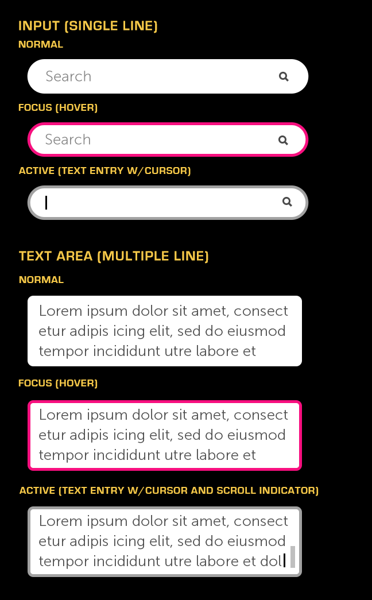

Text Input
About
Text Inputs are regions for displaying text or entering text via a keyboard. Moonstone provides both Single-Line and Multi-Line text inputs.
API Reference
moon.Input, moon.RichText, moon.TextArea
Behavior and States
Behavior
Single-Line Input
Single-line inputs (e.g., Input and RichText) are typically used in forms or as search fields. If necessary, a small icon may be shown on the right side of the input to clarify its purpose.
Multi-Line Input
Multiple-line inputs (e.g., TextArea) may be used for entering larger amounts of text. They should be used sparingly, however, as we discourage a lot typing in the TV environment.
Multi-line inputs scroll when the user types beyond the limits of the container.
While typing, if the entered text grows beyond the size of the text field, the beginning characters move offscreen in a marquee fashion. The 5-way may be used to return to the offscreen content.
If the final entered text is longer than what the field can display, it will appear as truncated and ellipsized in the normal state. In the focused state, either the full text will marquee (in Single-Line Inputs) or the user will be able to scroll (in Multi-Line Inputs).
Both types of inputs can display hint text; this text should be limited to a few words and should not go beyond the size of the text field. Once the user types in the field, the hint text is replaced by what the user has entered; depending on the context, the hint text may be retained or reset. The hint text is shown in both normal and focused states, but in the active state it is replaced with a blinking cursor.
The virtual keyboard launches onscreen as soon as the user clicks on a text input. Until then, the keyboard remains hidden in order to maximize screen real estate.
States
Normal (up/unpressed)
The Text Input is available for use and is not selected.
Focused (hover)
The Text Input currently has focus from the remote and is ready to be selected.
Active (down/pressed)
The Text Input has been selected and is ready to accept text entry via the onscreen keyboard.
Sizing
Text inputs have a default minimum width of 300 pixels, but the maximum width is configurable. The text entered may extend beyond the size of the text field.
The height of a Multi-line Text Field may be configured as needed, while the Single-Line Text Field is constrained to a single line.
The optional small icon that may be displayed in the single-line text field is 20px.
Illustration
